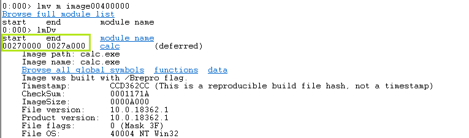
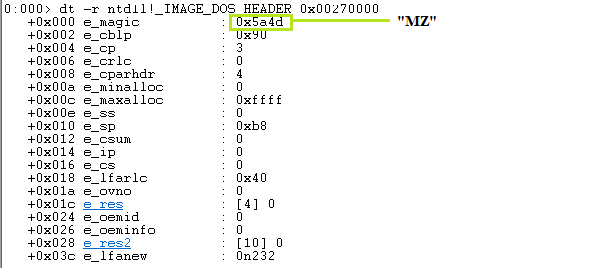
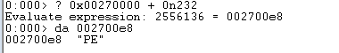
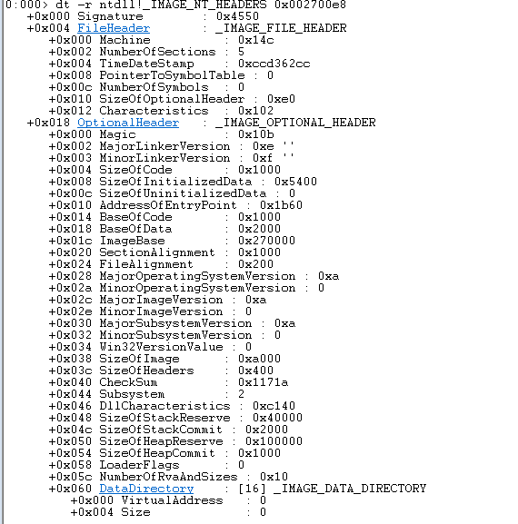
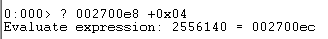
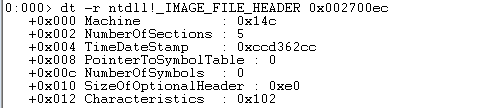
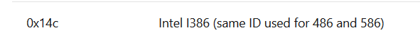
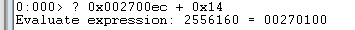
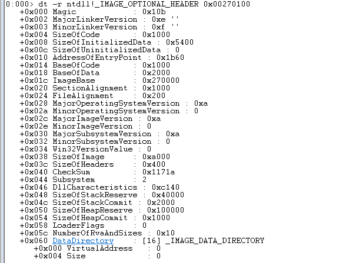
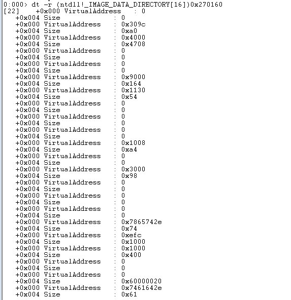

Hi, my name is Moldovan Darius (aka. T3jv1l). For this analyze I use calc.exe executable file. PE is the native Win32 file format. Every win32 executable uses PE file format. 32bit DLLs, COM files, OCX controls, Control Panel Applets (.CPL files) and .NET executables are all PE format. Even NT's kernel mode drivers use PE file format.
According to Wikipedia "PE format is a data structure that encapsulates the information necessary for the Windows OS loader to manage the wrapped executable code. This includes dynamic library references for linking, API export and import tables, resource management data and thread-local storage (TLS) data. On NT operating systems, the PE format is used for EXE, DLL, SYS (device driver), and other file types. The Extensible Firmware Interface (EFI) specification states that PE is the standard executable format in EFI environments."
The PE data structures include:
_IMAGE_DOS_HEADER, DOS STUB, _IMAGE_NT_HEADER
_IMAGE_FILE_HEADER, _IMAGE_OPTIONAL_HEADER, ,_IMAGE_DIRECTORY_ENTRY_[*].
We start with _IMAGE_DOS_HEADER which in the PE file format is the MS-DOS header which occupies the first 64 bytes of the file. It's there in case the program is run from DOS, so DOS can recognize it as a valid executable and run the DOS stub which is stored immediately after the header. The DOS stub usually just prints a string something like "This program must be run under Microsoft Windows" but it can be a full-blown DOS program.
typedef struct _IMAGE_DOS_HEADER { // DOS .EXE header
USHORT e_magic; // Magic number
USHORT e_cblp; // Bytes on last page of file
USHORT e_cp; // Pages in file
USHORT e_crlc; // Relocations
USHORT e_cparhdr; // Size of header in paragraphs
USHORT e_minalloc; // Minimum extra paragraphs needed
USHORT e_maxalloc; // Maximum extra paragraphs needed
USHORT e_ss; // Initial (relative) SS value
USHORT e_sp; // Initial SP value
USHORT e_csum; // Checksum
USHORT e_ip; // Initial IP value
USHORT e_cs; // Initial (relative) CS value
USHORT e_lfarlc; // File address of relocation table
USHORT e_ovno; // Overlay number
USHORT e_res[4]; // Reserved words
USHORT e_oemid; // OEM identifier (for e_oeminfo)
USHORT e_oeminfo; // OEM information; e_oemid specific
USHORT e_res2[10]; // Reserved words
LONG e_lfanew; // File address of new exe header
} IMAGE_DOS_HEADER, *PIMAGE_DOS_HEADER;
In the PE file, the magic part of the DOS header contains the value 4D 5A( MZ= Mark Zbikowsky one of the original architects of MS-DOS).
Before analyze with WinDGB this Header let's speak about what is ImageBaseAddress, this is important, because we need to find the address where is locate the _IMAGE_DOS_HEADER. ImageBase is the address where an executable file will be memory-mapped to a specific location in memory.
According to MSDN: The newest Windows have this ImageBaseAddress: 0x00400000. Now if all is clear let's start
Now let's see where is the start address of calc.exe using ImageBaseAddress. Type lmv m image00400000 with this command we inspect closely and the output will be displayed verbosely.

Now we have the image base address of PE file (calc.exe) 0x00270000.
Now we can see what is inside of _IMAGE_DOS_HEADER. It is similar to the C syntax above. We have the magic numeber 0x5A4D "MZ string"

Now we need to found the offset of e_lfanew. Maybe you ask what is this e_lfanew? PE file header is located by indexing the e_lfanew field of the MS-DOS header. The e_lfanew field simply gives the offset in the file, so add the file's memory-mapped base address to determine the actual memory-mapped address. Keep in mind the signature is "PE" that is what we try to find.
The main PE Header is a structure of type IMAGE_NT_HEADERS and mainly contains, IMAGE_FILE_HEADER, IMAGE_OPTIONAL_HEADER and IMAGE_DIRECTORY_ENTRY.
The "n" in 0n232 indicates that the number is base 10 and "x" will indicate base 16 (hex). Made a simple calculation to find the "PE string"

Now let's move to _IMAGE_NT_HEADER. It's not need to speak so much about this , because this is the main of PE header wich containt the PE Signature (0x4550=PE) and IMAGE_FILE_HEADER, IMAGE_OPTIONAL_HEADER and _IMAGE_DIRECTORY_ENTRY_[*].

Next Section is _IMAGE_FILE_HEADER. To access this section we need to add 4 bytes at 0x002700e8 address.

Now let's see what contain the _IMAGE_FILE_HEADER section of PE file.

Machine. Contain CPU IDs, we can see we have 0x14c that means we use Intel I386.

NumberOfSections. The number of sections in the file.
TimeDateStamp. The time that the linker (or compiler for an OBJ file) produced this file.
PointerToSymbolTable. This field is only used in OBJ files and PE files with COFF debug information.
NumberOfSymbols. The number of symbols in the COFF symbol table. For more information about this check COFF Simbol Table.
SizeOfOptionalHeader. The size of an optional header that can follow this structure. In OBJs, the field is 0. In executables, it is the size of the IMAGE_OPTIONAL_HEADER structure that follows this structure.
Characteristics. Flags with information about the file.
Next Section is _IMAGE_OPTIONAL_HEADER. To access this section we need to add 20 bytes(0x14) at 0x002700ec address.

Now let's see what contain the _IMAGE_OPTIONAL_HEADER section.

Magic numeber 0x10b. The optional header magic number determines whether an image is a PE32 (0x10b) or PE32+(0x20b) executable.
MajorLinkerVersion, MinorLinkerVersion. Indicates version of the linker that linked this image.
SizeOfCode. Size of executable code.
SizeOfInitializedData. Size of initialized data.
SizeOfUninitializedData.. Size of uninitialized data.
AddressOfEntryPoint. Defined in the PECOFF format for executable files refers to location in memory where the first instruction of execution will be placed
BaseOfCode. Relative offset of code (".text" section) in loaded image.
BaseOfData. Relative offset of uninitialized data (".bss" section) in loaded image
ImageBase. Preferred base address in the address space of a process to map the executable image to. The linker defaults to 0x00400000, but you can override the default with the -BASE: linker switch
SectionAlignment. Each section is loaded into the address space of a process sequentially, beginning at ImageBase. SectionAlignment dictates the minimum amount of space a section can occupy when loaded--that is, sections are aligned on SectionAlignment boundaries.
FileAlignment. Minimum granularity of chunks of information within the image file prior to loading.
MajorOperatingSystemVersion. Indicates the major version of the Windows NT operating system.
MinorOperatingSystemVersion. Indicates the minor version of the Windows NT operating system.
MajorImageVersion. Used to indicate the major version number of the application.
MinorImageVersion. Used to indicate the minor version number of the application.
MajorSubsystemVersion. Indicates the Windows NT Win32 subsystem major version number.
MinorSubsystemVersion. Indicates the Windows NT Win32 subsystem minor version number.
Win32VersionValues. Defines a version-information resource. The resource contains such information about the file as its version number, its intended operating system, and its original filename
SizeOfImage. Indicates the amount of address space to reserve in the address space for the loaded executable image. This number is influenced greatly by SectionAlignment.
SizeOfHeaders. This field indicates how much space in the file is used for representing all the file headers, including the MS-DOS header, PE file header, PE optional header, and PE section headers. The section bodies begin at this location in the file.
CheckSum. A checksum value is used to validate the executable file at load time. The value is set and verified by the linker. The algorithm used for creating these checksum values is proprietary information and will not be published.
Subsystem. Field used to identify the target subsystem for this executable. Each of the possible subsystem values are listed in the WINNT.H file immediately after the IMAGE_OPTIONAL_HEADER structure.
DllCharacteristics. Flags used to indicate if a DLL image includes entry points for process and thread initialization and termination.
SizeOfStackReserve, SizeOfStackCommit, SizeOfHeapReserve, SizeOfHeapCommit. These fields control the amount of address space to reserve and commit for the stack and default heap. Both the stack and heap have default values of 1 page committed and 16 pages reserved. These values are set with the linker switches -STACKSIZE: and -HEAPSIZE: .
LoaderFlags. Tells the loader whether to break on load, debug on load, or the default, which is to let things run normally.
NumberOfRvaAndSizes. This field identifies the length of the DataDirectory array that follows. It is important to note that this field is used to identify the size of the array, not the number of valid entries in the array
DataDirectory. The data directory indicates where to find other important components of executable information in the file. It is really nothing more than an array of IMAGE_DATA_DIRECTORY structures that are located at the end of the optional header structure. The current PE file format defines 16 possible data directories, 11 of which are now being used.
Next Section is _IMAGE_DATA_DIRECTORY. To access this section we need to add 96 bytes at 0x002700100 address.
Now we have address of _IMAGE_DATA_DIRECTORY 0x002700160. Display 16 time this header.

Data directory is an 16 array _IMAGE_DATA_DIRECTORY structure. Each member of the data directory is a structure called IMAGE_DATA_DIRECTORY, which has the following definition:
struct IMAGE_DATA_DIRECTORY STRUCT{
VirtualAddress dd ?
ISize dd ?
}
References!!
https://blog.kowalczyk.info/articles/pefileformat.html
https://tech-zealots.com/malware-analysis/pe-portable-executable-structure-malware-analysis-part-2/
https://www.ixiacom.com/company/blog/debugging-malware-windbg
https://docs.microsoft.com/en-us/previous-versions/ms809762(v=msdn.10)?redirectedfrom=MSDN
https://docs.microsoft.com/en-us/windows/win32/debug/pe-format#general-concepts